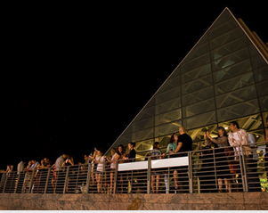

We have run similar WWT-based DIY Sky Show activities for middle school and high school girls as part of the Girls do Hack event at the Adler Planetarium and Expanding your Horizons at the University of Chicago.